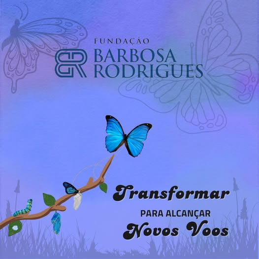
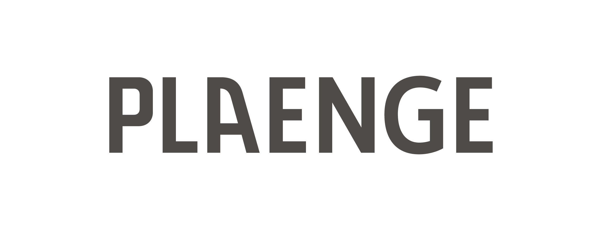

Oficina de Artesanato bate recorde de inscrições
Mais de 200 jovens participaram da primeira etapa do projeto 'Voo das Borboletas' neste final de semana...

Fomentamos o desenvolvimento social e cultural em comunidades, criando asas para novos futuros.
A Fundação Barbosa Rodrigues é uma entidade com mais de 43 anos de trajetória, dedicada à promoção da educação, da cultura e do desenvolvimento comunitário. Desde a sua origem, reafirma sua responsabilidade social como filosofia, colocando a valorização da educação e o fortalecimento dos vínculos comunitários no centro de sua missão.
Ao longo de sua história, ofereceu gratuitamente projetos e ações voltadas a crianças, adolescentes, educadores e famílias, expandindo sua atuação de Campo Grande/MS para diferentes municípios do estado. Sua identidade se traduz na crença de que a educação e a cultura são pilares fundamentais para a construção de um futuro mais justo, solidário e humano.
Pilar Base
Vínculos Fortes

Iniciativas que geram impacto real e imediato na vida de centenas de famílias brasileiras.
Festivais, mostras culturais e encontros que celebram a diversidade e o talento local.
Saiba mais trending_flatCapacitação profissional e oficinas artísticas para jovens e adultos em vulnerabilidade.
Ver turmas trending_flatTransparência e resultados: acompanhe o impacto social de cada investimento realizado.
Acessar dados trending_flatO Instituto Borboletas nasceu da convicção de que a arte e a educação são as ferramentas mais potentes para a metamorfose social. Nossa missão é criar pontes entre oportunidades e talentos esquecidos.
Valores como transparência, respeito à diversidade e compromisso com o desenvolvimento sustentável guiam cada uma de nossas pegadas. Acreditamos que, como borboletas, cada pequena ação pode gerar grandes mudanças em todo o ecossistema.

Nosso diferencial está na abordagem humanizada e no suporte de longo prazo que oferecemos a cada beneficiado.
Projetos pensados para durar e se tornarem autossuficientes.
Trabalhamos de mãos dadas com os líderes locais.
Abordagem pedagógica moderna e focada no indivíduo.
Acompanhamento em tempo real de todas as doações.
Mais de 200 jovens participaram da primeira etapa do projeto 'Voo das Borboletas' neste final de semana...

A união entre música e solidariedade rendeu resultados históricos para as famílias cadastradas no instituto...

Inscrições abertas para o ciclo de aceleração 2025. Conheça as etapas e como submeter seu projeto social...
Quem apoia nossa causa
